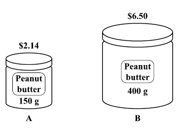
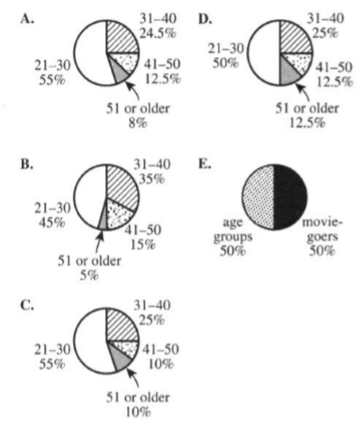
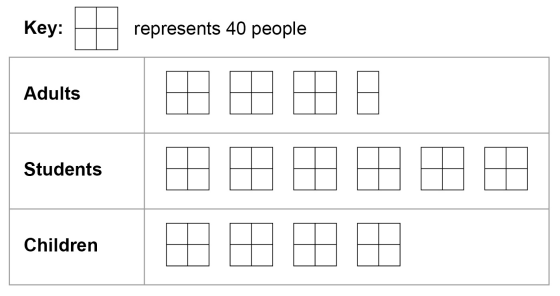
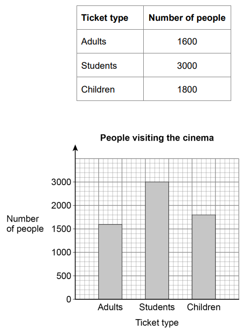
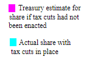
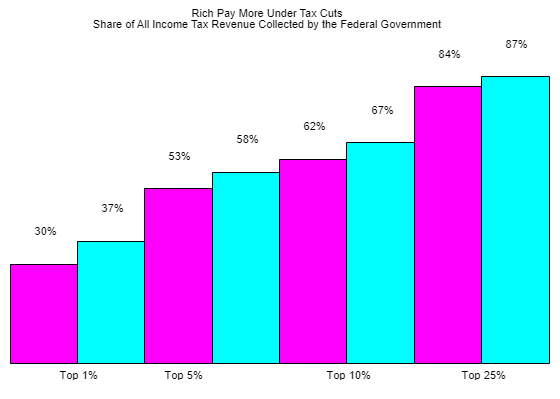

| $litres$ | $cost(EC\$)$ |
|---|---|
| $3$ | $10.4$ |
| $5$ | $p$ |
| $litres$ | $cost(EC\$)$ |
|---|---|
| $3$ | $10.4$ |
| $k$ | $50$ |
| Shopping Bill | ||
|---|---|---|
| Item | Unit Cost Price | Total Cost Price |
| $3$ kg sugar | $X$ | $\$10.80$ |
| $4$ kg rice | $Y$ | $Z$ |
| $2$ kg flour | $\$1.60$ | $\$3.20$ |
| Item (kg) | Cost ($\$$) |
|---|---|
| $3$ | $10.80$ |
| $1$ | $X$ |
| Fixture | Model | ||
|---|---|---|---|
| A | B | C | |
|
Bathtubs Shower stalls Sinks |
$1$ $0$ $1$ |
$1$ $1$ $2$ |
$2$ $1$ $4$ |
| Fixture | Cost |
|---|---|
|
Bathtubs Shower stalls Sinks |
$\$250$ $\$150$ $\$120$ |

| $Amount (g)$ | $Cost (\$)$ |
|---|---|
| $150$ | $2.14$ |
| $1$ | $A$ |
| $Amount (g)$ | $Cost (\$)$ |
|---|---|
| $400$ | $6.50$ |
| $1$ | $B$ |
ACT
Use the following information to answer questions 15 – 17
A large theater complex surveyed 5,000 adults.
The results of the survey are shown in the tables below.
| Age groups | Number |
|---|---|
|
21 – 30 31 – 40 41 – 50 51 or older |
2,750 1,225 625 400 |
| Moviegoer category | Number |
|---|---|
|
Very often Often Sometimes Rarely |
830 1,650 2,320 200 |
Tickets are $9.50 for all regular showings and $7.00 for matinees.

| Age groups | Number | Percentage |
|---|---|---|
| $21 - 30$ | $2,750$ | $ \dfrac{2750}{5000} * 100 = 0.55 * 100 = 55\% $ |
| $31 - 40$ | $1,225$ | $ \dfrac{1225}{5000} * 100 = 0.245 * 100 = 24.5\% $ |
| $41 - 50$ | $625$ | $ \dfrac{625}{5000} * 100 = 0.125 * 100 = 12.5\% $ |
| $51$ or older | $400$ | $ \dfrac{400}{5000} * 100 = 0.08 * 100 = 8\% $ |
ACT
Use the following information to answer questions $19 - 21$
Kyla purchased $25$ pieces of candy from Laszko's Candy Shop.
Her purchase consists of $7$ lollipops, $4$ candy bars, $10$ licorice sticks, and $4$ gumballs.
The unit price of each candy item is shown in the table below.
Kyla's purchase, without sales tax, totaled $\$10.30$.
Laszko's charges an $8\%$ sales tax on each purchase, which is calculated by multiplying the purchase
total by $0.08$ and rounding to the nearest $\$0.01$.
| Candy Item | Unit price |
|---|---|
|
Lollipop Candy bar Licorice stick Gumball |
$\$0.90$ $\$0.60$ $\$0.10$ $\$0.15$ |
ACT
Use the following information to answer questions $23 - 24$
The table below gives the price per gallon of unleaded gasoline at Gus's Gas Station
on January $1$ for $5$ consecutive years in the $1990s$.
At Gus's, a customer can purchase a car wash for $\$4.00$.
| Year | Price |
|---|---|
|
$1$ $2$ $3$ $4$ $5$ |
$\$1.34$ $\$1.41$ $\$1.41$ $\$1.25$ $\$1.36$ |
| Category | Number of Tickets Sold | Cost per Ticket in $\$$ | Total Cost in $\$$ |
|---|---|---|---|
| Juvenile | $5$ | $P$ | $130.50$ |
| Youth | $14$ | $44.35$ | $Q$ |
| Adult | $R$ | $2483.60$ |
| Mouse number | Experimental group | Control group |
|---|---|---|
| $1$ | $1$ min $46$ sec | $2$ min $13$ sec |
| $2$ | $2$ min $2$ sec | $1$ min $49$ sec |
| $3$ | $2$ min $20$ sec | $2$ min $28$ sec |
| $4$ | $1$ min $51$ sec | $2$ min $7$ sec |
| $5$ | $1$ min $41$ sec | $1$ min $58$ sec |
| Mouse number | Experimental group | Experimental group (seconds) | Control group | Control group (seconds) |
|---|---|---|---|---|
| $1$ | $1$ min $46$ sec | $106$ | $2$ min $13$ sec | $133$ |
| $2$ | $2$ min $2$ sec | $122$ | $1$ min $49$ sec | $109$ |
| $3$ | $2$ min $20$ sec | $140$ | $2$ min $28$ sec | $148$ |
| $4$ | $1$ min $51$ sec | $111$ | $2$ min $7$ sec | $127$ |
| $5$ | $1$ min $41$ sec | $101$ | $1$ min $58$ sec | $118$ |
| Sum: | $580$ | $635$ | ||
| Average: | $\dfrac{580}{5} = 116$ | $\dfrac{635}{5} = 127$ | ||
| Difference: | $127 - 116 = 11$ | |||
| Age Range | Number of Females |
|---|---|
| 20 — 24 | 9,223 |
| 25 — 29 | 9,326 |
| 30 — 34 | 9,896 |
| 35 — 44 | 22,670 |
| 45 — 54 | 18,741 |
| 55 — 64 | 12,250 |
| 65 — 4724 | 9,747 |
| 75 — 84 | 6,889 |
| 85+ | 2,099 |
| DigiPhone Calling Plans |
|---|
|
600 minutes* for $89.99** per month 1,000 minutes* for $119.99** per month 1,400 minutes * for $149.99** per month |
|
*The charge for each additional minute is $0.20** **Taxes are NOT included. |
| Year | 1860 | 1880 | 1906 | 1940 | 1990 | 2000 | 2013 |
| Area | 83,531 | 83,365 | 84,682 | 84,068 | 86,943 | 86,939 | 86,943 |
ACT Use the following information to answer Questions 33 - 35.
Many humans carry the gene Yq77.
The Yq test determines, with 100% accuracy, whether a human carries Yq77.
If a Yq test result is negative, the human does NOT carry Yq77
Sam designed a less expensive test for Yq77 called the Sam77 test.
It produces some incorrect results.
To determine the accuracy of the Sam77 test, both tests were administered to 1,000 volunteers.
The results from this administration are summarized in the table below.
| Positive Yq test | Negative Yq test | |
|
Positive Sam77 test Negative Sam77 test |
590 25 |
10 375 |


| Grade | Enrollment by May 15 | Regular enrollment fee |
|
3 4 5 6 |
20 15 28 18 |
$350 $400 $450 $500 |


| Player | Free Throws Made | Attempts | Free throw (%) |
|---|---|---|---|
| Micah | 30 | 93 | ............ |
| Nahum | 5 | 25 | ............ |
| Player | Free Throws Made | Attempts | Free throw (%) |
|---|---|---|---|
| Micah | 19 | 33 | ............ |
| Nahum | 44 | 94 | ............ |
| Player | Free Throws Made | Attempts | Free throw (%) |
|---|---|---|---|
| Micah | ............ | ............ | ............ |
| Nahum | ............ | ............ | ............ |
| 1995 | 1996 | |||||
|---|---|---|---|---|---|---|
| Player | H | AB | AVG | H | AB | AVG |
| Jeter | 12 | 48 | 0.250 | 183 | 582 | 0.314 |
| Justice | 104 | 411 | 0.253 | 45 | 140 | 0.321 |
ACT Use the following information to answer questions 71 – 73
The Dow Jones Industrial Average (DJIA) is an index of stock values.
The chart below gives the DJIA closing values from August 24 through September 30 of a certain year and
the
change in
the closing value from the previous day.
A minus sign indicates a decline (a closing value less than the previous day's closing value).
A plus sign indicates an advance (a closing value greater than the previous day's closing value).
| Date | Closing value | Change | Date | Closing value | Change |
|
8/24 8/25 8/26 8/27 8/30 8/31 9/01 9/02 9/03 9/07 9/08 9/09 9/10 |
8,600 8,515 8,160 8,050 7,540 7,825 7,780 7,680 7,640 8,020 7,860 8,045 7,795 |
-85 -355 -110 -510 +285 -45 -100 -40 +380 -160 +185 -250 |
9/13 9/14 9/15 9/16 9/17 9/20 9/21 9/22 9/23 9/24 9/27 9/28 9/29 9/30 |
7,945 8,020 8,090 7,870 7,895 7,930 7,900 8,150 8,000 8,025 8,110 8,080 7,845 7,630 |
+150 +75 +70 -220 +25 +35 -30 +250 -150 +25 +85 -30 -235 -215 |
| Tumor is Malignant | Tumor is Benign | Total | |
|---|---|---|---|
|
Positive Mammogram |
91 true positives |
1492 false positives |
1583 |
|
Negative Mammogram |
10 false negatives |
8381 true negatives |
8391 |
| Total | 101 | 9873 | 9974 |